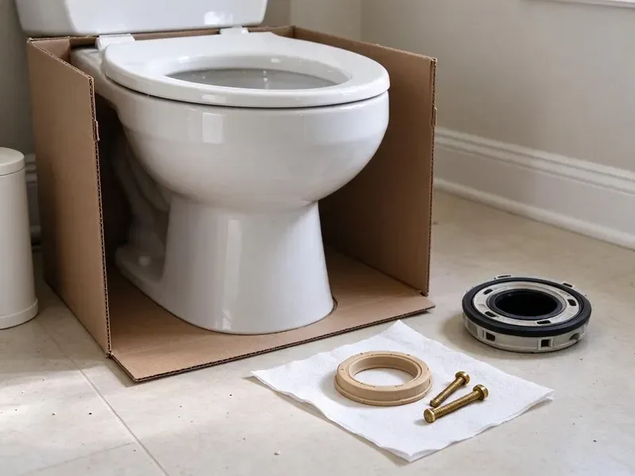
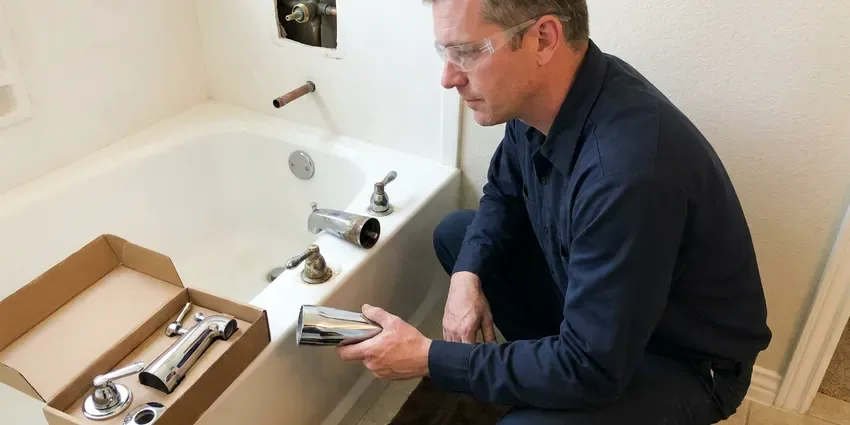

Sink Installation in Phenix City, AL
Upgrade your home with a professionally installed sink. Our team in Phenix City, AL ensures a perfect fit and leak-free operation.
- Fast, Reliable Service
- Expert Plumbers
- Fair Pricing
- Satisfaction Guaranteed
Get Your New Sink Installed Right in Phenix City, AL.
Our team is ready to help with your next sink installation project, big or small.
Professional Sink Installation Services in Phenix City, AL
BRV Plumbing provides comprehensive sink installation services across Phenix City, AL. Whether you are remodeling your kitchen or simply replacing an old, leaky bathroom sink, our certified plumbers have the tools and expertise to ensure a smooth, efficient installation. We handle everything from disconnecting the old unit to securing the new one and ensuring all plumbing connections are watertight and up to code.
Our expertise includes:
- Kitchen and bathroom sink installations
- Pedestal, drop-in, and undermount sinks
- Garbage disposal and faucet integration

Additional Bathroom Plumbing Services in Phenix City, AL
From toilets to showers, our bathroom plumbing team in Phenix City, AL handles repairs, installs, and upgrades with tidy, code-compliant work.


Customers
Why Choose BRV Plumbing for Sink Installation in Phenix City, AL?
We ensure every installation meets local Alabama plumbing codes, providing you with peace of mind and a reliable, long-lasting fixture.
- Code Compliance, We meticulously follow all Alabama plumbing codes for safe and compliant installations, including proper drainage and venting.
- Water Hardness, Our installations consider Alabama's water hardness, selecting appropriate sealants and connections to resist mineral buildup.
- Foundation Integrity, We take care to avoid any issues that could affect your home's foundation, common in Alabama's shifting clay soils, by preventing leaks.
Citywide Coverage
No matter where you are located in Phenix City, our skilled plumbers are just a call away. We make sure to bring all necessary tools and parts to complete your sink installation efficiently and correctly the first time.
Experienced Team
Each plumber at BRV Plumbing is committed to delivering high-quality workmanship for every sink installation. We continuously update our skills to handle new products and technologies in the plumbing industry.
Safety-First Approach
Safety is our top priority for every sink installation. We take all necessary precautions to protect your home and ensure our plumbers work in a secure environment, adhering to all safety protocols.
Trusted Certified Phenix City Plumbing Services Professionals
At BRV Plumbing, we take pride in providing licensed, certified plumbing services throughout Phenix City, AL. Backed by leading industry credentials, our experienced plumbers combine technical skill with genuine customer care. Whether it is repair, installation, or maintenance, we follow strict safety and quality standards to deliver long-lasting results you can trust.
Call Us Now PHCC Plumbing Contractor Recognition
PHCC Plumbing Contractor Recognition Better Business Bureau (BBB) Accreditation
Better Business Bureau (BBB) Accreditation Angi Certified Pro
Angi Certified Pro ISO 9001 Quality Management Certification
ISO 9001 Quality Management CertificationReliable Sink Installation Services in Phenix City, AL
Kitchen Sink Installation in Phenix City
Installing a new kitchen sink involves more than just setting it in place. We ensure proper connection to your water supply lines, drain, and garbage disposal. Our plumbers are experienced with various materials like stainless steel, cast iron, and composite sinks, ensuring a durable, leak-free installation. We also check for correct alignment with countertops and cabinets, which is crucial for a professional finish and long-term functionality in your Phenix City home.

Bathroom Sink Installation in Phenix City, AL
Whether you are updating a powder room or a master bath, BRV Plumbing handles all bathroom sink installations. We work with pedestal sinks, vessel sinks, undermount, and drop-in models. Our service includes careful removal of the old sink, precise measurements for the new unit, and secure connections for both hot and cold water supplies and the drain. We also ensure proper sealing to prevent water damage to your vanity or flooring, a common issue in many Alabama bathrooms.
Undermount Sink Installation in Phenix City
Undermount sinks offer a sleek look and easier countertop cleaning, but they require precise installation. Our team has the specialized tools and expertise to securely mount these sinks directly to the underside of your countertop. This involves careful sealing to prevent leaks and ensuring adequate support, especially for heavier models. We pay close attention to the cutouts and adhesive used, guaranteeing a strong bond that will last in your Phenix City kitchen or bathroom.
Pedestal Sink Installation in Phenix City, AL
Pedestal sinks are popular for their classic aesthetic and space-saving design, but their installation can be tricky due to the exposed plumbing. Our plumbers ensure the drain and supply lines are perfectly aligned within the pedestal column and securely anchored to the wall. This prevents wobbling and ensures all connections are hidden and watertight. We handle the delicate nature of ceramic pedestals with care, providing a stable and attractive fixture for your home in Phenix City, AL.
Commercial Sink Installation in Phenix City
For businesses in Phenix City, functional and durable sinks are critical. BRV Plumbing provides commercial sink installation services for restaurants, offices, and other facilities. We understand the demands of commercial use, installing heavy-duty utility sinks, multiple compartment sinks, and handwash stations that meet health codes and withstand constant use. Our installations are robust, ensuring minimal downtime for your operations and compliance with local regulations.
Faucet & Disposal Integration in Phenix City, AL
Often, a new sink installation goes hand-in-hand with a new faucet and garbage disposal. We expertly integrate these components, ensuring all connections are compatible and functioning correctly. From single-handle pull-down faucets to touchless models and powerful disposals, we ensure everything is installed simultaneously with your new sink. This combined service saves you time and ensures all parts work together seamlessly in your Phenix City, AL home.
Sink Replacement & Upgrades in Phenix City
Replacing an old, worn-out sink can significantly improve the look and functionality of your space. We handle the careful removal of your existing sink and dispose of it properly. Our team can help you upgrade to a larger, more modern, or more durable sink that fits your existing countertop cutout or advise on modifications needed. This service is ideal for refreshing your kitchen or bathroom without a full remodel in Phenix City.

Leak-Proof Sink Connections in Phenix City, AL
The most critical aspect of any sink installation is ensuring all connections are leak-proof. Our plumbers use high-quality sealants, proper pipe dope, and correct torque settings on all fittings to prevent drips and leaks. We conduct thorough water pressure tests after every installation to confirm watertight integrity. This attention to detail protects your cabinets, floors, and ensures the longevity of your new sink in Phenix City, AL.
Sink Installation Near Me in Phenix City, AL
When you search for 'sink installation near me' in Phenix City, AL, BRV Plumbing is your trusted local expert. We are deeply familiar with the plumbing infrastructure throughout the area, from older homes with galvanized pipes to new constructions with PEX and copper.
Our proximity means we can respond quickly to your service requests, providing efficient and timely sink installation. We pride ourselves on being a reliable, community-focused plumbing company dedicated to serving our Phenix City neighbors with integrity and professional care.
BRV Plumbing at a Glance
- Fully licensed plumbing team covering Phenix City, AL
- 24/7 emergency service with same-day scheduling
- Upfront, flat-rate pricing before work begins
- 4.8-star rated by 549+ Alabama customers
Phenix City Map
Phenix City Information
- Population
- 38,441
- Area codes
- Local
- Service area
- Phenix City and communities within 40 miles
- Nearby
- Opelika, Auburn, Montgomery, Prattville
Proper sink installation is crucial in Phenix City, AL homes to prevent water damage to cabinets and floors, especially given the potential for high humidity and the typical older housing stock that may have original plumbing.
Expert Services
Trust our professionals for reliable BRV Plumbing solutions in Phenix City, AL.
Our Specialized Plumbing Services in Phenix City, AL
At BRV Plumbing, we provide a complete range of plumbing services across Phenix City, AL. From leak detection to full system installations, our team ensures fast, precise, and affordable service for both residential and commercial properties. Explore our core services below:


How Our Sink Installation Process Works in Phenix City, AL
Our sink installation process is designed for clarity and efficiency, ensuring a hassle-free experience for our Phenix City customers.
Request a Quote
Call (256) 391-9413 or fill out our online form to schedule an appointment. We will discuss your sink installation needs and provide a clear, upfront estimate.
On-Site Assessment
Our plumber will visit your Phenix City home to assess the existing setup, take measurements, and confirm the best approach for your new sink installation.
Professional Installation
We carefully remove your old sink, install the new unit, connect all plumbing, and test for leaks. We ensure everything is clean and functional before we leave.
Frequently Asked Questions About Sink Installation in Phenix City
The cost of sink installation in Phenix City, AL typically ranges from $200 to $600, depending on the type of sink, complexity of the installation, and any necessary plumbing modifications. This usually includes labor but not the cost of the sink itself. For a precise estimate, it's best to get a personalized quote from BRV Plumbing.
Most standard sink installations, for either a kitchen or bathroom, can be completed within 2 to 4 hours. More complex installations, such as those requiring new plumbing lines or significant modifications to countertops or cabinets, may take longer. We will provide a time estimate during your initial consultation.
Generally, simply replacing an existing sink with a new one of the same type does not require a permit in Alabama. However, if the installation involves altering the drain or water supply lines, or changing the location of the sink, a plumbing permit may be required. BRV Plumbing can advise you on local code requirements for your specific project.
Yes, BRV Plumbing stands behind the quality of our workmanship. We offer a warranty on all our sink installation services, covering any issues that may arise due to our installation. Specific warranty details will be provided at the time of service, giving you peace of mind.
We are experienced with installing all major brands, including Kohler, Moen, Delta, American Standard, Elkay, Blanco, and many others. While we do not sell sinks directly, we can offer recommendations based on your preferences and budget, ensuring compatibility with your existing plumbing.
While some homeowners attempt DIY sink installation, it's highly recommended to hire a professional plumber. Incorrect installation can lead to leaks, water damage, and costly repairs down the line. Professionals ensure proper sealing, secure connections, and compliance with local plumbing codes, saving you headaches and money in the long run.
BRV Plumbing can install a wide variety of sinks, including kitchen sinks (undermount, drop-in, farmhouse), bathroom sinks (pedestal, vessel, console, wall-mount), utility sinks, and commercial sinks. We work with all common materials like stainless steel, porcelain, ceramic, composite, and cast iron.
Common signs you might need a new sink include persistent leaks around the basin or drain, cracks or chips in the material, severe staining that won't clean, rust, or if you're simply upgrading for aesthetic or functional reasons. An old, damaged sink can also lead to water damage in your cabinets.
What People Are Saying About Our Plumbing Experts?

Sofia M.
Two new toilets installed in one visit, no mess left behind, and the tech even adjusted a faucet he noticed was dripping. Fair pricing and really friendly.
Toilet Installation · Auburn, AL
James P.
Our commercial plumbing system had a leak under the sink, and BRV Plumbing handled it professionally. The plumbers arrived quickly and restored everything without disruption to our customers.
Commercial Plumbing · Enterprise, ALLaura S.
I scheduled a water heater replacement, and the team made the process smooth and affordable. The new unit works perfectly, and they cleaned up after completing the job.
Water Heater Replacement · Phenix City, AL
Mark T.
When our office needed drain cleaning, BRV Plumbing provided quick, reliable service. The plumber arrived on time and made sure every drain flowed perfectly before leaving. Very satisfied.
Drain Cleaning · Dothan, AL
Daniel K.
A pipe burst at 11 pm and they actually answered. The plumber showed up within the hour, shut everything down, and had us back to normal the next morning. Could not ask for more.
Emergency Plumbing · Opelika, AL
Patricia H.
We had a slab leak that two other companies could not find. BRV Plumbing located it in under an hour, explained our options, and the price matched the quote to the dollar.
Slab Leak Repair · Auburn, AL